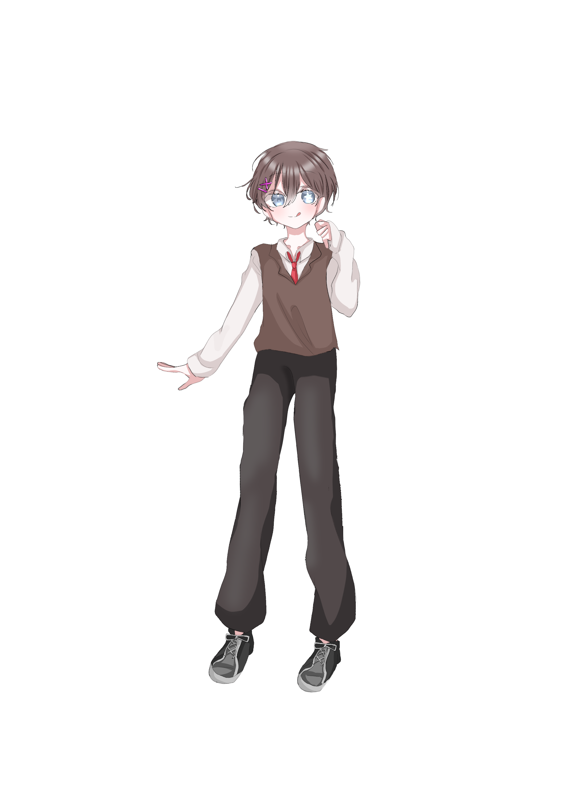

CHARACTER ARCHIVE / FILE 002
AKINO KAEDE
秋野 楓
PERSONAL DATA
CHARACTER FILE
いつもにこにこと笑顔を絶やさない、犬系の後輩イケメン。 茶色の髪に緑色の瞳、左耳にはピアスをひとつ。 袖口から指先が少しだけ覗く萌え袖と、上目遣いがよく似合う少年だ。 その人懐っこい笑顔を見ていると、いつの間にか頭の上に耳が、 背中にはしっぽが生えているような錯覚に陥る。
持ち前の美貌と巧みな処世術で人の懐に入り込むことに長けており、 彼の笑顔に心を奪われない者はいない――とさえ思わせる魔性の男。 元交際相手の数は数え切れず、本人に現在恋人はいない。
父親は大企業の社長、母親は歌舞伎町のトップスター。 何不自由のない恵まれた環境で育ち、容姿にも才能にも恵まれてきた。 傍から見れば、欲しいものは何でも手に入る、順風満帆な人生だろう。
しかし、楓にはひとつだけ、誰にも埋められない欠落がある。 それは、「好き」という感情が分からないこと。 誰かの心を惹きつけることはできても、自分自身が誰かを本気で好きになったことはない。
愛されることと、愛することは同じではない。 いつか彼が心から「愛してる」と告げられる相手に出会う日は来るのだろうか。
QUOTE
印象的な台詞の記録は、現在ありません。